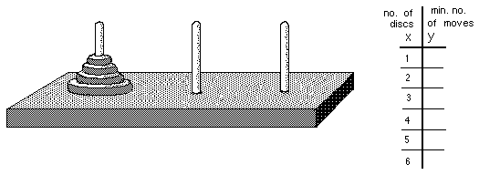
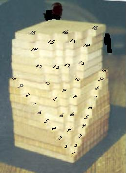

Hands-on materials: good for the brain!
The Tower Puzzle- The object is to move the tower of discs from one peg to another. The rules are: you can't put a bigger disc on top of a smaller one, you can only move one disc at a time, and later you will need to move the discs in the minimum # of moves. Don starts young people off with maybe only 3 discs. Then lets the student start with more.

The Math: an exponential function, positive and negative exponents, negative numbers with fractions, patterns in the table. It shows how the number of disks is related to the number of moves to move the disks to another peg. See Sheri's work with the Tower Puzzle. See there also, the 3D rotation of the graph of teh Tower Puzzle.
The Shuttle Puzzle or The Peg Game-
Maggie and the difference of 2 cubes The Difference of 2 cubes IES applet, see identities on MAP
Sunflower stalk
Sunflower head see MAP
Soma set
Pattern Blocks
Geo Blocks
Volume relationship Set -
ratios of volumes of cone to cylinder,
pyramid to cube- see Sheri's work on this,
sphere to cylinder
Cuisenaire rods-
make trains as long as the yellow rod (gets Pascal's triangle),
build the Soma pieces (Olivia) to make the 3x3x3 cube
SA/Vol ratio of rods (see Ch.6) and why rodents are nocturnal animals and why you grate cheese to put on spaghetti
The growth of the Nautillus shell

Vickie's work on the volume of the chambers (in Deryn's work)
Rotagram -from Scotland,
used for finding equal angles with parallel lines and sum of interior and exterior angles of a polygon
Don's homemade 3D Multilication tables. Find patterns.

Snowflake Area & Perimeter uses triangular graph paper, counting, infinite series, factoring
Geoboard
square area within shapes, Pick's theorem, 3D graph- see Map
circular for angles in a circle, also used to relate time zones on globe of earth
Hinged Mirrors
gets an hyperbola, angle between mirrors, # of images, reflection of light (angle of incidence = the angle of reflection), see Map
Tesselations
(Abe's work), and gummed shapes from Scotland on the ceiling in Don's mathroom:

Kaleidocycles
Binomial expansion - using squares, cubes (below), see Map

Doggie math (Changing Shapes With Matrices)
The Pantograph
Sheri reduces the size of a shell with a pantograph
Roxanna enlarges a picture of Bugs Bunny with a pantograph
Recording timer- distance vs time- see Map
Various shaped bottles
Balance Scale